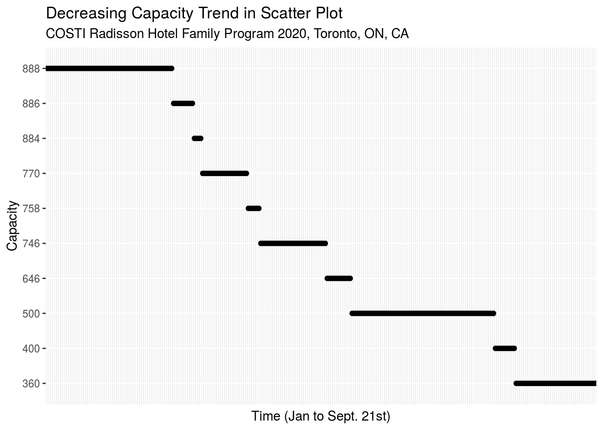
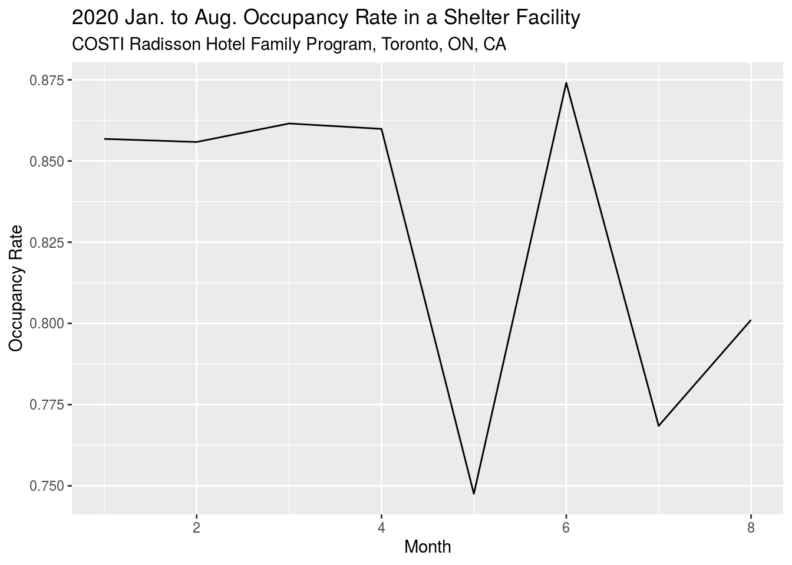
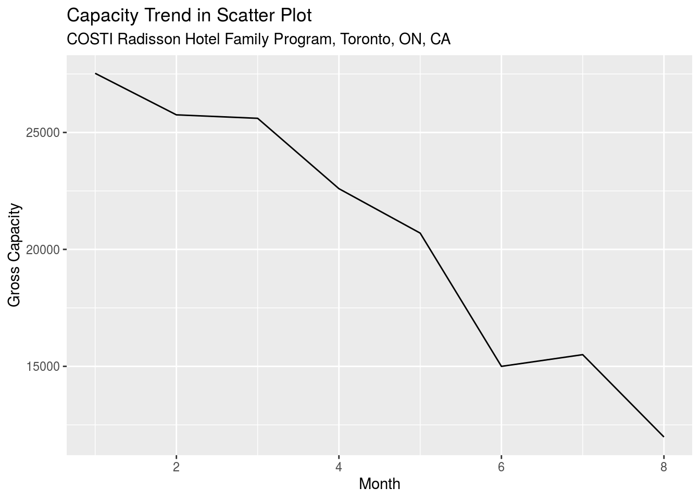

Abstract
With COVID-19 turning into “COVID-2020”, shelters in each city are in need of special government emergency responses. Toronto with the largest shelter system in Canada are cutting the maximum capacity by 50% in response to COVID to achieve social distancing.
Introduction
This is an article discussing the occupancy rate of a Toronto shelter facility during the first 8 months in 2020. With a bumpy entering into 2020, Toronto city has been deducing capacity of several shelter facilities. Take the largest location in Toronto for example, COSTI Radisson Hotel had their capacity cut from 888 in January to only 360 recently. (Downward trend shown in Graph below)
Packages used contain Wickham et al. (2019), Wickham (2016), Wickham et al. (2020) and Gelfand (2020). 
With an over 50% deducting rate of capacity on shelter facilities, issues can be raised. Why would government drastically decrease the spots in shelters during a global pandemic? Is it a rational action to do during this specific time in history? This report will take a closer look into the actual occupancy rate in COSTI Radisson Hotel in 2020 to see validity on this government decision.
Data Collection
The raw data set is publicly accessible on the Toronto Open Data Portal (https://open/toronto/ca/). The name of the data package I chose is “Daily shelter occupancy current .csv”. This data set kept daily track of occupancy and capacity for all the shelter facilities in Toronto starting from 2020 to September 21. I picked the largest program in the biggest facility to be my analyzing subject, the COSTI Radisson Hotel Family Program. In order to better understand whether its capacity meets the needs, I transformed the daily data set into a monthly scale and calculated the monthly occupancy rate for this facility. Considering the month of September is not yet complete, only data of first 8 months are being used.
Here is a glimpse of my data set which contains 8 months of total number of occupants and capacity for COSTI Radisson Hotel Family Program. Also, the monthly occupancy rates can be calculated as gross occupancy divided by gross capacity of their corresponding month.
## `summarise()` ungrouping output (override with `.groups` argument)## Rows: 8
## Columns: 4
## $ month <dbl> 1, 2, 3, 4, 5, 6, 7, 8
## $ OCCUPANCY <dbl> 23586, 22040, 22059, 19430, 15471, 13111, 11911, 9597
## $ CAPACITY <dbl> 27528, 25752, 25604, 22596, 20696, 15000, 15500, 11980
## $ occupancy_rate <dbl> 0.8568003, 0.8558559, 0.8615451, 0.8598867, 0.7475358,…Data Analysis
I visualize the monthly occupancy rate fluctuation in a line chart with month on the x-axis and occupancy rate on the y-axis. The occupancy rate stayed fairly steady around 86% in the beginning 4 months despite a stair-case descending speed on gross monthly capacity. In May, the occupancy rate hitted a bottom low at around 74.8%. The reason why May had the lowest occupancy rate could be explained by the two-month continuously dropping at a speed of approximately 20% capacity/per month. With the capacity cutting down notice in advance, there might be more people moving out than actual needed. However it only took less one month for the facility to fill up back to its beginning level of this year. In June, occupancy rate at COSTI Radisson Hotel (Family Program) peaked at 87.4% while its capacity hit the second low in 8 month. From May to June, this is where the capacity dropped the most between each month. It gave people very much lesser time to cope this change, therefore June became the most packed month for this facility by September in 2020. In July, the capacity was slightly adjusted up by approximately 5% in the next month. The result was significant, the occupancy rate went down to 76.8% within a month.
#graph a line chart to show monthly fluctuation on occupancy rate
myset %>%
ggplot(mapping = aes(x=month,y=occupancy_rate)) +
geom_line()+
labs(title = "2020 Jan. to Aug. Occupancy Rate in a Shelter Facility",
subtitle = "COSTI Radisson Hotel Family Program, Toronto, ON, CA",
x = "Month",
y = "Occupancy Rate") 
#graph another line chart to show capacity fluctuation trend. capacity as denominator, how does it explain the occuapny rate
myset %>%
ggplot(mapping = aes(x=month,y=CAPACITY)) +
geom_line()+
labs(title = "Capacity Trend in Scatter Plot",
subtitle = "COSTI Radisson Hotel Family Program, Toronto, ON, CA",
x = "Month",
y = "Gross Capacity")
Discussion
Even thought the people who’s in need may become even more in need during COVID-19, there are still some necessary health care measurements that need to be followed for the sake of their own health. Cutting capacity in half helps maintaining healthy social distance. It might be concerning seeing shelter nowadays has to clean out half of the people who used to live there before the pandemic start,, but this does not simply mean the government is depriving half of the vulnerable populations’ living places. According to the City of Toronto website, 30 new temporary shelters had opened being about to allocate more than 3500 people, therefore explained the 50% decrease on shelter capacity.
References
CA. City of Toronto COVID-19 Response for People Experiencing Homelessness. Aug 7, 2020. https://www.toronto.ca/news/city-of-toronto-covid-19-response-for-people-experiencing-homelessness/
Gelfand, Sharla. 2020. Opendatatoronto: Access the City of Toronto Open Data Portal.
Wickham, Hadley. 2016. Ggplot2: Elegant Graphics for Data Analysis. Springer-Verlag New York. https://ggplot2.tidyverse.org.
Wickham, Hadley, Mara Averick, Jennifer Bryan, Winston Chang, Lucy D’Agostino McGowan, Romain François, Garrett Grolemund, et al. 2019. “Welcome to the tidyverse.” Journal of Open Source Software 4 (43): 1686. https://doi.org/10.21105/joss.01686.
Wickham, Hadley, Romain François, Lionel Henry, and Kirill Müller. 2020. Dplyr: A Grammar of Data Manipulation.